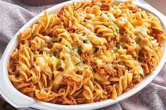

Massa

As massas estão presentes em 95% dos lares portugueses, e as designadas massas “saudáveis” já chegam a 12% dos lares.
Segundo um estudo de marcado feito pela Nielsen,
também esta categoria segue as atuais tendências de consumo.
- 2 rolos de massa folhada
- 2 ovos
- 1 Gema de Ovo
- 120 g de avelãs em pó
- 120 g de Nutella® (15 g/fatia)
- Aquece Nutella® em banho-maria, em lume brando
- Estende um disco de massa folhada num tabuleiro forrado com papel vegetal,
- Retira novamente a tarte e pica a superfície com um garfo para fazer padrões decorativos, ou corta losangos na sua superfície com uma faca.
- Bate a gema de ovo numa tigela com uma colher de sopa de água fria